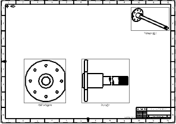
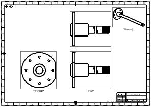
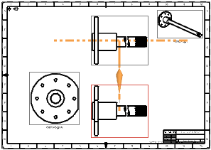

Open drf7_85_broken_view_axle_dwg.

Confirm you are in the Drafting application.
Right-click on the border of the Front@1 view, and then choose Add Projected View.
In the Projected View dialog box, in the View Origin group, make sure the Placement method is set to Hinge and the Associative Alignment check box is selected.
In the graphics window, move the cursor above the front view and click to place the projected view.

Close the Projected View dialog box.
Drag the border of the front view.
Note that the projected view you added moves with the front view, but the existing orthogonal view remains stationary.

Right-click and choose Undo, or type Ctrl+Z to return the views to their original locations.